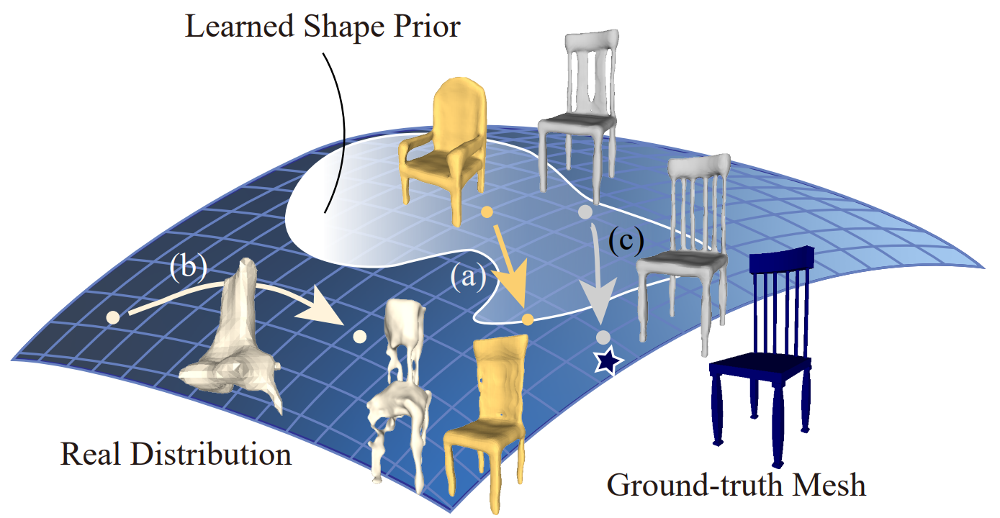
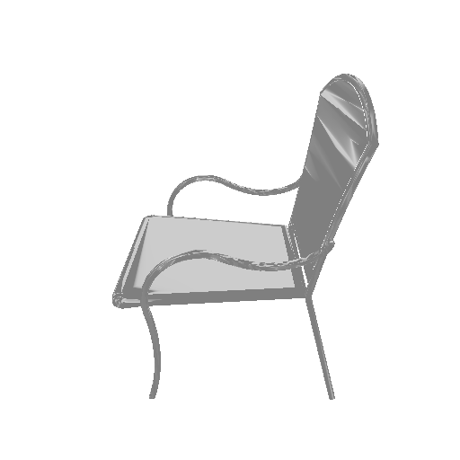
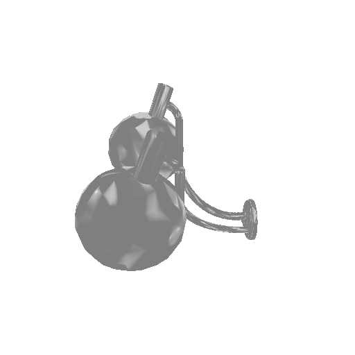
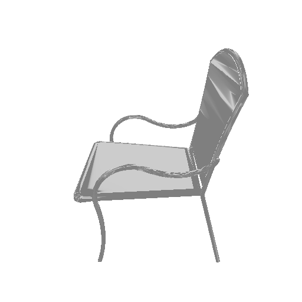
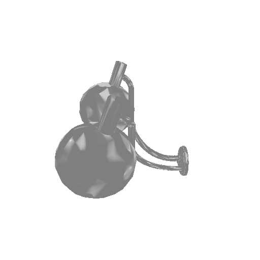

Deep Optimized Priors for 3D Shape Modeling and Reconstruction
3D Shape Modeling and Reconstruction
Abstract
Many learning-based approaches have difficulty scaling to unseen data, as the generality of its learned prior is limited to the scale and variations of the training samples. This holds particularly true with 3D learning tasks, given the sparsity of 3D datasets available. We introduce a new learning framework for 3D modeling and reconstruction that greatly improves the generalization ability of a deep generator. Our approach strives to connect the good ends of both learning-based and optimization-based methods. In particular, unlike the common practice that fixes the pre-trained priors at test time, we propose to further optimize the learned prior and latent code according to the input physical measurements after the training. We show that the proposed strategy effectively breaks the barriers constrained by the pre-trained priors and could lead to high-quality adaptation to unseen data. We realize our framework using the implicit surface representation and validate the efficacy of our approach in a variety of challenging tasks that take highly sparse or collapsed observations as input. Experimental results show that our approach compares favorably with the state-of-the-art methods in terms of both generality and accuracy.
What is this the best strategyof using the prior in a 3D learning task?

The shape prior learned from the limited training data cannot capture the full landscape of the real data distribution. Common practice that uses a fixed pre-trained generator is constrained within the prior (path a) and thus fails to model the unseen data lying outside the prior, even with latent code optimization at test time. Optimizing a randomly initialized generator, on the other hand, is prone to be trapped in a local minimum due to the complex energy landscape (path b).
Whereas the pre-train prior could provide a good initialization in a forward pass, we propose to further optimize the parameters of the prior and the latent code according to the task-specific constraints at test time. We show in this work that the proposed framework can effectively break the barriers of pre-trained prior and generalize to the unseen data that is out of the prior domain (path c). Hence, our approach can generate results (ending point of path c) closest to the ground truth (star point on the real data manifold) compared to the other learning methods (path a and b).
Results on Real Captures with Nearest Neighbor Comparison
 


